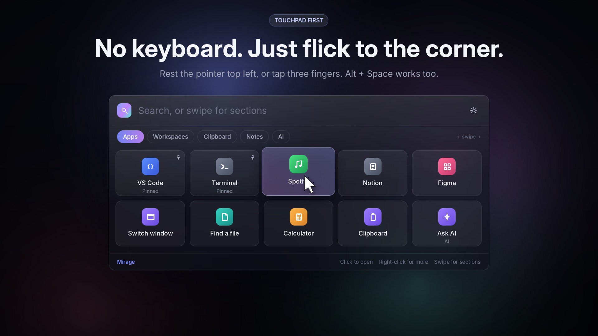
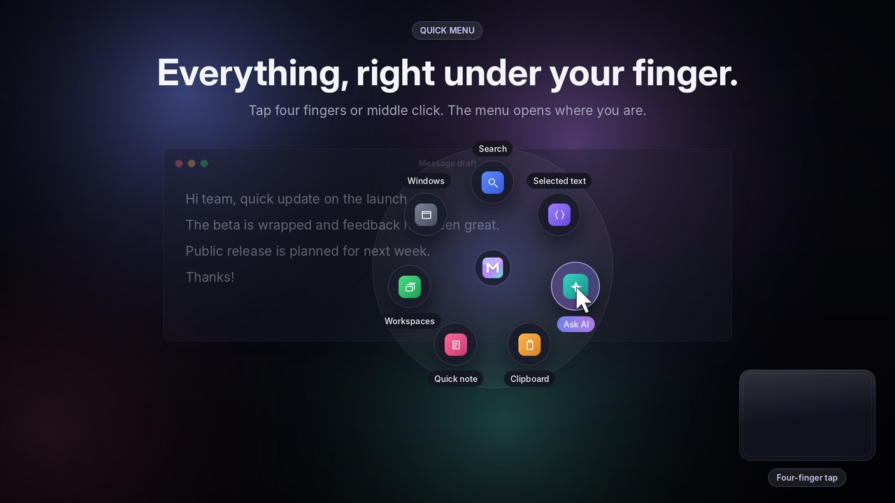
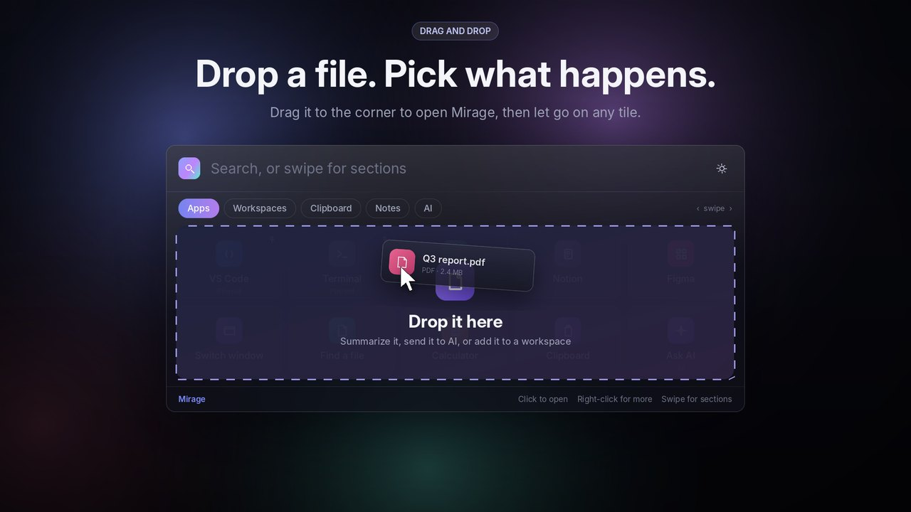
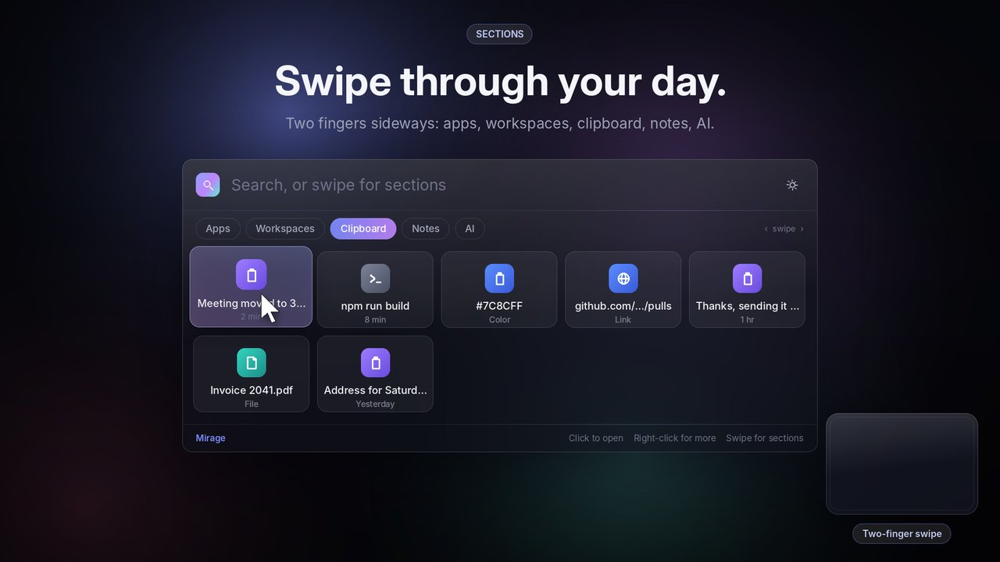
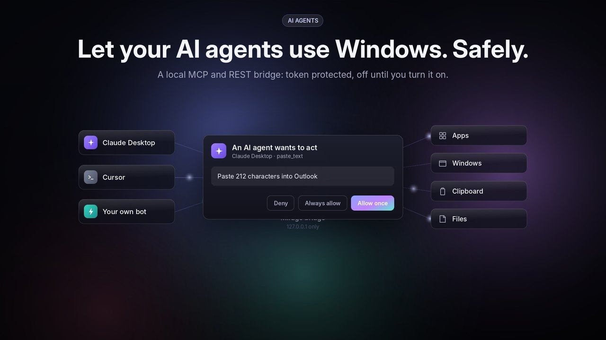

Push the pointer into a corner, tap with three fingers, or open a radial menu right where you are. Swipe between apps, workspaces, clipboard, notes and AI. Drop a file and pick what happens. The keyboard still works everywhere.
Four ways in, all made for a touchpad or a mouse. Pick what suits your hands in Settings > Touchpad & mouse.
Rest the pointer in the top-left corner for a quarter second. Any corner works, and it stays quiet over full-screen games and video.
Middle click, a side button, a four-finger tap or Ctrl+Shift+Space opens a menu at the pointer. Flick toward what you want.
Map a three- or four-finger tap or swipe to Mirage in Windows touchpad settings. Mirage has a button that takes you there.
Drag a file into the hot corner and Mirage opens ready for the drop. Summarize it, send it to AI, or add it to a workspace.
| Gesture | Set it to | What it does |
|---|---|---|
| Three-finger tap | Alt+Space | Open Mirage |
| Four-finger tap | Ctrl+Shift+Space | Quick menu at the pointer |
| Three-finger swipe up | Ctrl+Alt+Space | Actions for the text you selected |
| Two-finger swipe sideways | Works inside Mirage | Next or previous section |
Windows keeps three- and four-finger gestures for itself, so you point them at Mirage's shortcuts in Settings > Bluetooth & devices > Touchpad > Advanced gestures.
Big targets that lift as you hover. Click to open, right-click for more. Swipe between sections, or drop something on a tile to act on it.





Images are rendered from Mirage's design for this page.
One launcher for the things you do fifty times a day.
Search every app and settings page, ranked by what you use. Jump to any open window.
Find files by name through the Windows Search index, with a folder scan when the index can't help.
Paste anything you copied, or paste it as UPPERCASE, JSON or a slug. Skips password manager items.
Type ;date or ;thanks in any app and Mirage fills it in. Typing is never stored.
Open a whole set of apps, sites and folders in one tap, or save the windows you have open now.
Jot something down, drop text on the note tile, and search it later.
ChatGPT, Claude, Gemini, Copilot, Perplexity or Grok, with your question or selection filled in.
Run command lines, your own shortcuts, math and unit conversions like 10 km to mi.
Explain, summarize, fix, translate or reply with AI, or transform the text in place.
Mirage includes a local MCP and REST bridge, so the AI agents and chat apps you use can open apps, switch windows, use the clipboard and run your workspaces. It is off until you turn it on.
{
"mcpServers": {
"mirage": {
"command": "C:\\Users\\you\\AppData\\Local\\Programs\\Mirage\\Mirage.exe",
"args": ["--mcp"]
}
}
}
curl -X POST http://127.0.0.1:47821/v1/tools/launch_app \
-H "Authorization: Bearer <token>" \
-H "Content-Type: application/json" \
-d '{"app":"Notepad"}'
Settings > AI agents copies the exact config for you, with your path and token.
Both downloads install just for you. Nothing touches Program Files or asks for admin rights.
Installs into your user profile, adds a Start menu entry and an uninstaller. Updates in place.
Download Mirage-Setup.exeUnzip anywhere, even a USB stick, and run Mirage.exe. Settings stay in a data folder next to it.
Download Mirage-Portable.zip